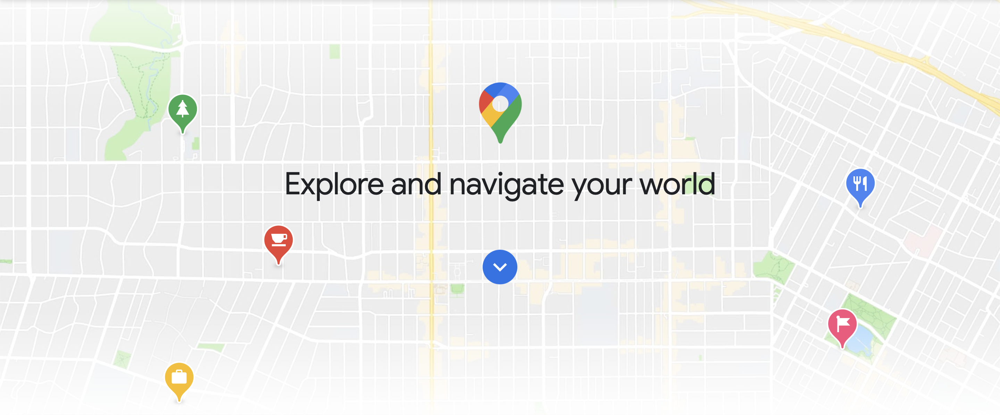
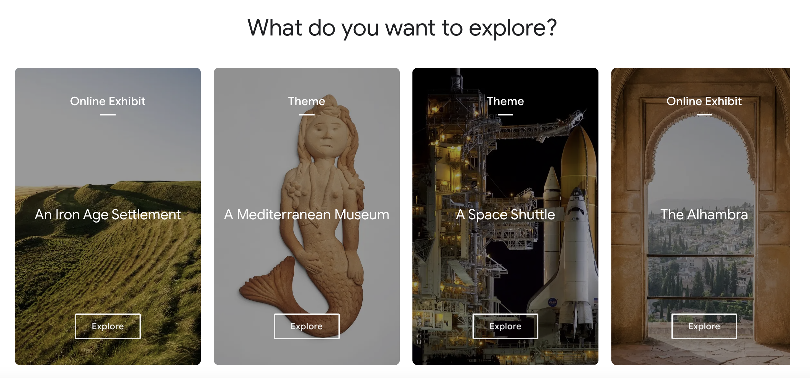
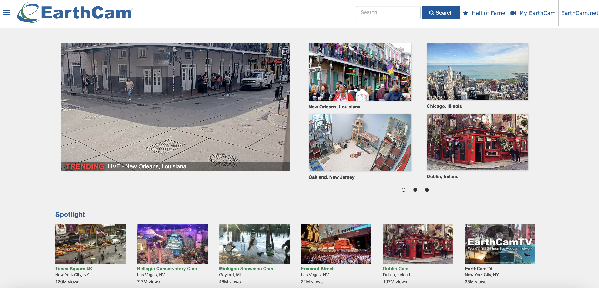

Google has a super cool trick! It's like a magical explorer's tool that lets you go on amazing adventures all over the world, right from your own home.
Google has special cameras and super-duper map makers who take you on virtual journeys to far-off places like the tall and snowy Himalayas,
the wild and green Amazon rainforest, and even the awesome Great Barrier Reef, which is like a super cool underwater wonderland in our own big backyard!

Google Arts and Culture is like having a super cool, make-believe adventure where you can visit famous art galleries, museums, and amazing places from all around the world, without ever leaving your home.
Imagine looking at Monet's gorgeous paintings,
going on a special tour of a grand theater in Russia called the Bolshoi Theatre, or even pretending to be as tall as the Eiffel Tower in Paris.

Earthcam is like a magical window to the world! It shows you exciting places and animals from all over the planet.
You can explore tiny streets, big cities, and even watch elephants, meerkats, and a safari lodge.
It's like a fantastic gift that keeps on giving us a peek into our amazing world.